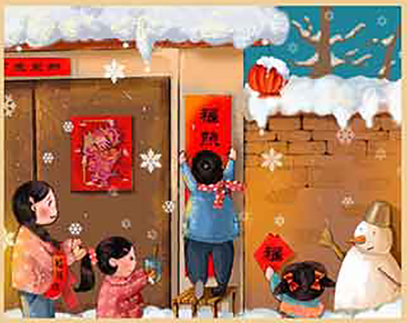

中国的年俗文化源远流长，全国各地行生出纷繁多样的过年习俗，南北迥 异，各具特色，虽然各地习俗不尽相同，但是备年货、送年礼却是几乎全国 上下的“过年必备”。置办年货，包括吃的、穿的，戴的，用的，贴的(年 红)。送的(拜年)礼物等等，统名日之“年货”，而把采购年货的过程称 之为办年货”.办年货是中国人过春节的项重要活动，
农历十二月廿三/世四日祭灶民间祭灶，源于古人拜火习俗。《释名》 : “灶。造也，创食物也，“灶神的职责就是执掌灶火，管理饮食，后来扩大 为考察人间善恶，以降福祸，祭灶在中国民间有几千年历史了，灶神信仰是 中国百姓对衣食有余梦想追求的反映。
在民间，新年前夕有“腊月二十四，扫尘(亦称扫屋)的习俗。民谚称二 十四，扫房子”。民间称做扫尘日”。扫尘就是年终大扫除，家家户户都 要打扫环境，清洗各种器具，拆洗被桐窗帘，酒扫六间庭院，掸拂尘垢蛛 网，疏浚明渠暗沟。到处洋溢着欢欢喜喜搞卫生。干干净净迎新春的欢乐气 氛按民间的说法:因“尘”与“陈”谐音，年前扫尘有”除陈布新”的涵 义。扫尘用意是要把一切夯运，晦气统统扫出门，以折来年清吉。
压岁钱，年俗之一，年晚饭后长帮要将事先准备好的压岁钱派发给晚帮，据说压岁钱可以压住邪祟，晚辈得到压岁钱就可以平平安安度过-岁。 压岁钱在民俗文化中寓意辟邪驱鬼，保佑平安，压岁钱最初的用意是镇恶驱邪，因为人们认为小孩容易受鬼祟的侵害，所以用压岁钱压崇驱邪。
游神，是传统贺岁习俗之。游神，又称圣驾巡游、游老爷、营老爷，游菩萨、游神赛会、年例、迎神、迎年、游春、行香、菩萨行乡、抬神 像，神像出巡等等，是指人们在新年期间或其它喜庆节日里，又或诸神圣诞的这一天， 到神庙里将行身神像请进神轿里，然后抬出庙宇游境，接 受民众的香火膜拜，寓意神明降落民间，巡视乡里，保佑合境平安，主旨是酬神，消灾，祈福等.游神沿途伴随有锣鼓、唢呐、神偶.舞狮舞 龙飘色标旗、游灯、八音、杂技及乐队演奏等丰富多彩艺阵表演。是集拜神、祈祷、欢庆、宴客为体的传统民俗活动，
年廿八、廿九咸三十日家家户户“贴年红”(年红是春联、门神、横批、年 画、°福” 字等过年时所贴的红色喜庆元素统称)。过年贴年红(挥春)， 是中国传统的过年习俗，增添了喜庆的节日气氛，并寄子着人们对新年和新 生活的美好期盼。
年夜饭，又称年晚饭、团年饭团圆饭等，特指岁末除夕的闻家聚餐，年夜 饭源于古代的年终祭祀仪，拜祭神灵与相先后团圆聚餐。年夜饭是年前的重 头戏，不但丰富多彩，而且很讲究意头。吃团年饭前先拜神祭相，待拜察仪 式完毕后才开饭。席上般有鸡(亩意有计)。鱼(寓意年年有余) .蚝豉(寓意好市)、发菜(寓意发财)、，腐竹(寓意富足).莲藕(寓意 聪明》。生菜(寓意生财)、生蒜(寓意会计算) .腊肠(寓意长久)等以求吉利。中国人的年夜饭是家人的团圆聚餐，这顿是年尾最丰盛、最 重要的一顿晚餐。
春节期间走访拜年是年节传统习俗之一一 ，是人们辞旧迎新、相互表达美好祝恩的种方式，初二、三就开始走亲成看朋友，相互拜年，道贺祝 福，说些恭贺新喜、恭喜发财、恭喜、新年好等话，拜年的意义所在是亲朋好友之间走访联络感情、互贺新年，表达对亲朋间的情怀以及对新- 年生活的美好祝福，